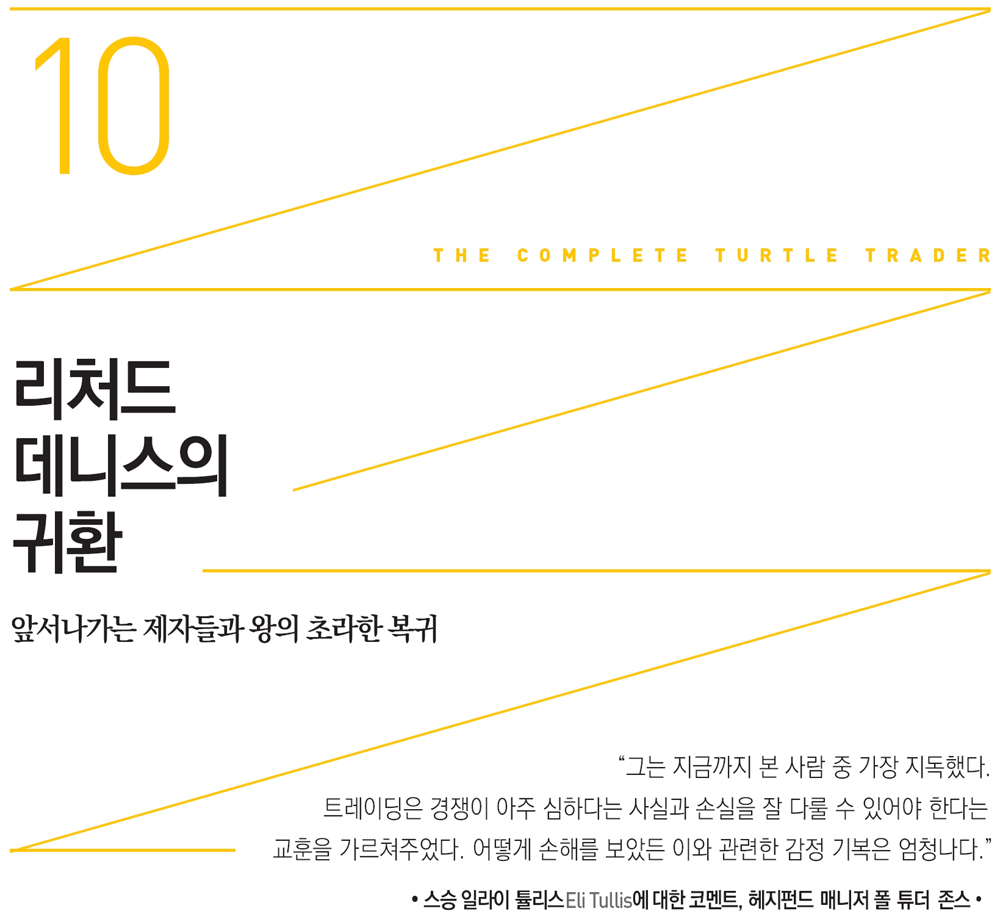

터틀이 큰 성공을 했든 실패를 했든 이들의 명성과 돈에 대한 소문으로 떠들썩해지자 옛 스승은 1990년 초 헤지펀드로 몰리는 자금 중 일부라도 얻고 싶은 마음이 생겼다. 터틀의 성공은 백퍼센트 스승 덕분이었지만 이제는 제자들이 앞서나가고 있었다. 자기가 키운 제자들과 경쟁해야 하는, 더욱 치열해진 시장에 재진입 여부를 검토하면서 리처드 데니스는 다시 매매를 할지 말지 고민이 많았다.
하지만 1990년대 초중반은 리처드 데니스에게 정말 어려운 시기였다. 드렉셀 펀드와 관련하여 낭패를 본 뒤 당한 집단소송 때문에 여전히 괴로움을 겪고 있었다, 그를 법정으로 몰고 간 원고들은 그가 “재정적으로 궁핍”하고 “빚에 시달리고” 있다고 결론지었다.
제프 고든은 리처드 데니스의 마음속을 이렇게 꿰뚫었다. “그는 자신이 만들어낸 모델, 즉 수련생들을 이길 수 있다고 봤을 겁니다. 창안된 모델이 어떻게 그 창시자를 능가할 수 있겠냐고 생각했겠죠.”
하지만 1988년 리처드 데니스의 은퇴와 터틀 프로그램 중단 사실을 알고 있는 제프 고든을 포함한 많은 이들은 달가워하지 않았다. 제프 고든은 당혹스러워했다. 어떻게 그런 일이 벌어질 수 있는지 아직도 의아해했다. “비유를 들자면 이렇습니다. 초보들을 모아놓고 체스를 가르쳐준 뒤 이들과 게임을 했는데 제자들 모두가 스승을 이기기 시작합니다. 그러면 스승은 어떤 마음이 들까요? 만약 리처드 데니스가 운용에서 손을 뗀 뒤 드렉셀에서 받은 자금을 모두 터틀에게 맡겼다면 이들은 아마도 투자금을 100억 달러로 불렸을 겁니다. 데니스는 풍족한 삶을 누리고 있겠죠. 그가 터틀 그룹을 해체시키는 바람에 날린 돈은 아마 수백만 달러, 아니 수십억 달러에 이를 겁니다.”
리처드 데니스 본인도 많이 아쉬워했음에 틀림없다. 왜냐하면 1994년 형 톰 데니스와 함께 차린 데니스 트레이딩 그룹Dennis Trading Group마저 빛을 보지 못했기 때문이다. 출입문에는 익명을 유지하기 위해 방 번호와 전화번호부에 등재하지 않은 전화번호만 달랑 적어놓았다.
1980년대에 이끌었던, 직원 100명, 고객 50~100명, 고정비 800만 달러의 대형 C&D가 아니었다. 그렇지만 여전히 충성스러운 지지자들이 있었다. “리처드 데니스는 평생 시장을 공부하는 사람이자 뛰어난 천재입니다. 그가 무슨 일을 하든지 관심을 기울일 만합니다.” 이는 바클레이즈 트레이딩 그룹 소속 펀드 평가사에서 일하는 솔 왁스먼의 평가였다.
리처드 데니스가 자신을 ‘트레이더’가 아니라 ‘분석가’라고 칭하고 다닐 무렵, 다음 질문을 가장 많이 받았다. “왜 이런 일을 합니까? 어째서 다시 불구덩이에 뛰어들려 하시나요?” 그는 자선사업이나 정치 등 온갖 이유를 갖다붙였지만 계속 추궁받자 유명해진 제자들 얘기를 꺼냈다. “트레이딩 저널을 볼 때마다 터틀들이 얼마나 많은 돈을 운용하고 있는지 확인할 수 있었습니다. 적어도 이들만큼은 잘할 수 있다고 생각했죠. 그래서 시도나 해보자고 마음먹었습니다.”
그가 업계로 돌아온다면 여전히 활동할 여지는 있었다. 시카고상업거래소의 플로어 애널리스트인 빅 레스피나스Vic Lespinasse는 그가 단점도 있지만 장점도 있다고 봤다. “드렉셀 사건으로 흠집이 나긴 했지만 아직도 명성이 높습니다. 다시 좋은 실적을 쌓을 수 있는데도 왜 시도하지 않는지 궁금합니다. 그는 슈퍼스타이거든요.”
리처드 데니스에게 새 투자회사의 운용 전략이 터틀과 어떻게 다른지 묻자 이전과는 다르게 대답이 자신 있는 어투가 아니었다. “제가 가르친 사람(터틀)들은 바로 저한테서 배운 전략을 토대로 성공가도를 달리고 있습니다. 사람들은 뭔가 업데이트된 전략에 관심을 기울이죠. 어제의 모토가 ‘추세는 친구다’였다면 오늘의 모토는 ‘추세는 까칠한 애인이다’일 듯싶습니다.
터틀들이 월가에서 정체성 문제를 극복하려고 애쓰고 리처드 데니스가 무대로 복귀할 무렵 터틀 출신인 러셀 샌즈가 아무도 예상하지 못한 일을 벌였다.
러셀 샌즈
러셀 샌즈는 뭔가 석연치 않은 이유로 1년 만에 터틀 프로그램을 등졌다. 본인은 스스로 떠났다고 밝힌 반면, 다른 터틀들은 그가 ‘해고’되었다고 했다. 내막이 어찌되었든 그가 리처드 데니스의 트레이딩 규칙을 팔고 다닌 일에 비해서는 중요한 문제가 아니었다.
그는 제리 파커와 함께 설립했던 체사피크 캐피탈을 떠난 직후 리처드 데니스의 트레이딩 기법을 팔고 다니기 시작했다. 러셀 샌즈는 제리 파커가 왜 전 직장에 더 중점을 두는지 이해했지만(거기서의 경력이 “더 길고 유효하기에”) 둘 사이에 갈등의 싹도 자라고 있었다.
한동안 둘은 서로 가까이 지냈다. 날마다 상대방 집에서 지낼 정도였다. 하지만 얼마 지나지 않아 제리 파커가 러셀 샌즈의 지분을 모두 사들였다. 러셀 샌즈는 이 일을 어떻게 평가했을까? “제리 파커가 욕심이 생긴 겁니다.” 공평하게 말하자면 열심히 일해 백만장자가 된 많은 사람들은 탐욕스럽다는 말을 듣는다. 마찬가지로 러셀 샌즈도 질투심이 많다는 소리를 들어도 이상할 게 없다.
러셀 샌즈는 제리 파커와 헤어진 후 당초 뜻하던 대로 진행되지 않은 이유를 다음과 같이 설명했다. “폴 손더스Paul Saunders와 케빈 브란트(키더 피바디, 제임스 리버 캐피탈 프린서플스James River Capital Principles 등에서 일했다)가 다가와 이렇게 제안했습니다. “러셀 씨, 회사를 별도로 차리시면 어떨까요? 그러면 저희가 돈을 대겠습니다. 체시파크는 제리 파커에 맡기시고요.’ 저는 좋다고 답했습니다. 그때가 첫 걸프전 직후여서 원유 시장이 엄청나게 움직였습니다.”
러셀 샌즈는 키더 피바디에서 자금을 받아 운용을 시작했지만 이후 이삼 분기 동안 시장에 추세가 나타나지 않았다. 러셀 샌즈는 당시 운용성과가 대략 -25퍼센트였다고 설명했다. 고객들 모두 아우성이었다. 하지만 그 엄혹한 상황에서 그의 설명은 모호했다. “이제 그만두려고요. 앞으로 무엇을 할지 모르겠습니다.”
1992년 8월 허리케인 앤드류가 플로리다 남부를 강타하고 며칠 지난 뒤 러셀 샌즈는 세심하게 고안된 비밀유지 약속을 저버렸다. 〈시카고 트리뷴Chicago Tribune〉에 다음과 같이 까발렸던 것이다.
“세계적으로 유명한 시카고 선물 트레이더 리처드 데니스의 제자가 스승의 트레이딩 비법을 처음으로 대중에게 공개할 예정이다. 이번 주말 시카고를 포함한 전국 순회 세미나에서 모든 내용을 밝히기로 했다. 참가비 1인당 2,500달러.”
아마 일반적 상황이라면 스승의 비법을 팔아먹는 행동이 큰 문제가 되지 않았을 테지만 터틀 세계의 비밀은 그 깊이가 달랐다. 마이크 섀넌은 당시 일을 뒤돌아보면서 헛웃음 쳤다. “1986년이나 1987년에 이런 인터뷰를 했다면 우리는 입을 꾹 다물었을 것입니다. 그때에는 진행되고 있는 모든 것을 비밀리에 진행했고 자부심도 대단했습니다. 정말 특별한 무언가가 있다고 느꼈고 저희도 그 독특한 실험 프로젝트의 일부라 여겼습니다. 비밀유지도 정말 엄격했습니다. 리처드 데니스 및 그와 함께 일하는 직원 모두가 실험 관련 내용을 발설하는 것을 허용하지 않았습니다.”
짐 디마리아는 비밀유지 약정서에 서명할 필요조차 없었다고 했다. “비밀은 당연히 지켜야 한다고 생각했습니다. 배운 내용이 원래 저희 것이 아니기 때문입니다. 저는 그 비법을 다른 사람들에게 알려주고 싶지 않았어요.”
짐 디마리아의 반응은 대부분의 터틀이 리처드 데니스에 대해 지녔던 생각을 그대로 드러낸 것이라 할 수 있다. 결국 터틀 실험은 엄청난 돈을 버는 비법에 대한 것일진대 수백만 달러를 버는 방법을 다른 사람과 공유한다는 것은 말이 안 된다. 한편 러셀 샌즈의 행동이 어떤 파장을 몰고 올지 알지 못했던 다른 터틀들은 리처드 데니스 매매기법의 중요성을 깎아내리려 했다. 다시 말해 그 기법만으로는 부자가 될 수 없다는 점을 세상에 알리고 싶었다(맞는 말이다).
러셀 샌즈는 이는 좋은 사업 기회라며 되받아쳤다. “저는 불법 행위를 저지르지 않았습니다. 비도덕적인 짓도 하지 않았고요. 저는 사람들에게 “제가 설명하는 것은 20년 전 리처드 데니스가 했던 내용 그대로입니다.”라고 말합니다. 모든 것이 그의 공이죠. 감히 그의 생각을 따라갈 수가 없어요. 저는 그저 전달만 할 뿐입니다. 이것도 못하게 막을 수는 없죠.”
15년 후 억만장자 반열에 올랐다고 알려진 제리 파커는 이전에 함께했던 동료를 맹비난했다. “러셀 샌즈가 말하는 내용은 2,500달러의 가치가 없습니다.”
리즈 체블은 리처드 데니스의 매매기법을 이해하고 활용하는 데 꼬박 2년이 걸렸다며 “당시 러셀 샌즈가 배운 내용은 제한적”이었다고 깎아내렸다.
그렇다. 제리 파커와 러셀 샌즈는 날마다 같은 곳에서 일했다. 당시 제리 파커가 아는 터틀 트레이딩 기법을 러셀 샌즈도 알았다. 둘은 기본적 지식도 함께 나눴다. 하지만 오늘날 제리 파커의 성공을 이끈 ‘실행’ 부분에서는 전혀 그렇지 않았다.
샘 드나르도는 러셀 샌즈의 숨은 면을 들춰냈다. “저는 러셀 샌즈가 자신이 하는 일을 외부에 발설하고 다녔다고 생각합니다. 그래서 큰 문제가 되었습니다. 이는 제 귀로 직접 들은 얘기입니다. 자신이 다르게 매매한다는 사실을 자기 어머니나 다른 사람들에게 말하고 다녔다고 들었습니다. 결국 이를 리처드 데니스도 알게 되었죠. 그가 프로그램을 떠나게 된 이유가 그 일 때문인지 성과 때문인지는 잘 모르겠습니다. 하여튼 그는 중도에 탈락했습니다.” 여러 터틀이 이와 같은 얘기를 했다.
러셀 샌즈는 자신이 퇴출당한 것이 아니라 스스로 그만두었다고 주장하면서 이렇게 말했다. “물론 제가 스스로 떠났다고 하는 사람들도 있고 잘렸다고 말하는 이들도 있겠죠. 제가 입이 가볍고 발설해서는 안 될 말을 하고 다녔다고 주장하는 사람들도 분명 있을 겁니다.”
한편 1992년 러셀 샌즈가 추진한 세미나의 안내장에는 그가 제리 파커와 공동으로 자금을 운용했다고 적혀있었다. 하지만 제리 파커는 대부분의 결정은 본인이 내렸고 러셀 샌즈는 그저 주문만 냈다고 주장했다. 그는 러셀 샌즈가 트레이딩 기법을 팔려는 주된 이유는 돈을 모아 트레이딩에 복귀하려는 욕심 때문이라고 했다.
제리 파커는 러셀 샌즈의 행위가 위법은 아니지만 비도덕적이며 비윤리적이라고 지적했다. 리처드 데니스에 대해서는 “우리에게 그 모든 지식을 준 그에게 무엇으로 보답할 수 있겠습니까?”라며 옹호했다.
터틀 동료들은 러셀 샌즈의 행동에 당황한 나머지 마침내 어떻게든 대응해야 한다고 느꼈다. 러셀 샌즈와 이를 마케팅하는 사람들이 터틀 매매규칙을 팔기 위해 제시한 홍보용 문구는 이랬다. “전례 없이 가장 강력하고 가치 있으며 수익성도 좋은 트레이딩 기법이 저렴하고 위험도 없는 투자자금으로 참가할 수 있는 새로운 트레이딩 코스에서 곧 밝혀질 것이다.”
러셀 샌즈의 광고는 “정말 부담 없는 가격! 15년 연속 수익을 기록한 트레이딩 기법!”이라는 점을 크게 부각시켰다.
러셀 샌즈에 대한 공격에 대항하는 내용의 홍보도 진행했다. “잘 들어보세요. 러셀 샌즈가 아주 낮은 가격에 비법을 공개한다고 매우 기분 나빠하는 사람들이 많습니다. 다른 터틀들, 그리고 엄청나게 성공한 이들의 스승은 이 귀중한 비법이 밝혀지는 것을 원치 않았습니다. 돈을 아무리 많이 줘도요!” 2007년에 성행했던 야간 투자 광고 문구나 나름 없었다.
한편 샘 드나르도는 러셀 샌즈의 세미나 추진을 아주 호의적으로 해석했다. “러셀 샌즈가 트레이딩 기법을 밝힌다고 하니 모두 화가 났습니다. 그렇지만 그가 다른 무슨 일을 할 수 있겠습니까? 택시 운전요?” 얼 키퍼는 터틀들이 어떻게든 비밀을 지키려 한 이유는 따로 있었다고 했다. “솔직히 저희들은 그렇게 교양 있는 사람들은 아닙니다. 그저 리처드 데니스에 대한 충성심이 강한 것뿐이었습니다.”
리처드 데니스는 러셀 샌즈의 세미나에 대해 침묵으로 일관했다. 하지만 몇몇 터틀이 실패했다는 점은 분명히 밝혔다. “무명으로 남을 터틀이 한두 명 있었습니다. 반면 대부분은 모범적이었습니다.”
리처드 데니스가 일부러 점잖게 말했을지도 모른다. 하지만 그의 오랜 친구로서 트레이딩을 함께한 톰 윌리스는 러셀 샌즈의 팬은 아니었지만 이렇게 말했다. “리처드 데니스는 모범적이고 신앙심이 깊은 기독교인이 아닌 적이 없었습니다. 아마 그는 러셀 샌즈에 대해 유감스럽게 생각하지 않은 듯합니다.”
리처드 데니스 다시 은퇴하다
러셀 샌즈 관련 소동이 있은 후 리처드 데니스는 무대로 화려하게 복귀했다. 이로써 그는 1990년대 대부분을 트레이더로 활동하게 된다. 대중에게 정확한 운용 시스템을 공개하지는 않았지만 실적을 보면 추세추종 전략을 구사하고 있음을 알 수 있다. 1994년 복귀 후 1998년 9월까지 연복리 수익률은 약 63퍼센트에 이른다. 1995년과 1996년에 각각 108.9퍼센트와 112.7퍼센트의 수익률을 올리며 2년 연속 세 자릿수의 성과를 달성했다.
항상 그랬듯 이전과 같은 고위험 고수익 트레이딩 전략이었다. 이 전략은 그를 명예의 전당으로 이끌기도 했지만 아킬레스건이 되기도 했다. 그렇지만 이 시기는 빌 클린턴이 대통령이었고 닷컴 버블이 한창이던 때였다. 이 때문에 그의 성과가 탁월했는데도 사람들의 눈길을 끌지 못했다.
더욱이 복귀한 그가 제대로 자금을 운용할 수 있을지 우려하는 사람들이 많았다. 그래서 그는 고객의 근심을 불식시키고자 자신의 자의적 판단 능력이 형편없음을 인정하고 매매규칙에 대한 임의적 개입은 없다고 못 박았다. 그러면서 컴퓨터를 자신의 새 친구라고 불렀다. “몇 년 전과는 확연히 다른 오늘날의 컴퓨터가 할 수 있는 것을 생각해보면 정교하게 고안된 컴퓨터 트레이딩 시스템과 인간이 대등하게 경쟁한다는 것은 상상할 수 없습니다.”
고객을 유인하기 위해 ‘컴퓨터’라는 단어를 쓰는 것은 옛날에나 있던 일이다. 웬일인지 리처드 데니스는 인터넷 혁명이 한창이던 때에도 신기술에 능하지 못했다(그는 늘 프로그램을 짜지 못한다고 했다). 예순을 넘긴 사람들은 그의 말을 믿었겠지만, 월가에서는 그의 ‘컴퓨터’라는 단어에 큰 안도의 숨을 쉰 사람이 단 한 명도 없었다.
설상가상으로 리처드 데니스를 비판하는 사람들은 그의 엄격하고 기계적인 트레이딩 공식은 마케팅 전략에 불과하다고 여겼다. 이에 리처드 데니스는 견제와 균형까지 두루 갖추었다면서 그들에게 반박했다. 그는 자신 있는 투로 말했다. “결국 트레이더는 잘 돌아가는 시스템으로 운용해야 합니다. 제가 알기로 기계적 시스템이 가장 잘 작동합니다. 따라서 저희의 트레이딩 기법으로 계속 좋은 성과를 거둘 수 있다고 굳게 믿고 있습니다.”
이 시기 리처드 데니스의 트레이딩 전략에 차이가 있었다. 즉, 그는 수련생들에게 가르쳤던 동일한 트레이딩 원칙을 고집스럽게 고수했다. 월가에서 가장 역사적이었던 때인 1998년 8월 그는 큰돈을 벌면서 현장에 있었다. 그는 다른 추세추종 친구들과 마찬가지로 그달에 엄청난 수익을 거두었다. 그는 신난 듯 말했다. “루블화, 옐친, 진퇴양난의 상황에서 시장은 미친 듯 움직였습니다.” 8월에만 13.5퍼센트의 수익률을 올림으로써 1월부터 8월까지 누적 수익률은 45퍼센트에 육박했다.
리처드 데니스가 펄펄 날던 그 순간 다른 트레이더들은 제로섬 게임의 시장에서 돌처럼 가라앉고 있었다. 월가에서 이름을 날리던 롱텀 캐피탈 매니지먼트LTCM도 같은 시기에 붕괴되었다. LTCM은 수십억 달러를 날렸다. 살로먼 브라더스의 전설적 채권 트레이더 출신인 존 메리웨더John W. Meriwether 대표는 투자자들에게 보내는 편지에 이렇게 적었다. “(1998년) 8월은 저희에게 정말 고통스러운 달이었습니다.”
이것이 리처드 데니스가 올린 수익률의 정점이었다. 왜냐하면 그가 제로섬 게임에서 역사적인 승리를 거둔 후 몇 년이 지난 후 다시 게임에서 밀려났기 때문이다. 2000년 9월 데니스 트레이딩 그룹은 매매를 중단하고 고객 계좌를 청산했다. 리처드 데니스의 현재 펀드의 투자자인 버트 코즐로프Bert Kozloff는 고통스러운 사실을 밝혔다. “데니스 트레이딩 그룹은 6월에 -50퍼센트를 기록한 뒤 7월에 소폭 회복했습니다. 하지만 다시 -50퍼센트를 깨고 -52퍼센트까지 내려갔습니다. -50퍼센트일 때 계속 매매해 회복을 시도할 수도 있겠지만 -60퍼센트나 -70퍼센트로 주저앉을 위험도 있죠. 그러면 복구할 방법이 없습니다.”
리처드 데니스에게는 위안이 되는 얘기는 아니지만 고객들이 그에게서 돈을 찾아간 2000년 가을은 추세추종 트레이더들이 진짜 바닥을 친 시기였다. 그로부터 12개월 동안 수많은 경쟁 트레이더들은 100퍼센트 또는 그 이상의 수익률을 거두었다. 바닥에서 공포에 질려 자금을 인출한 리처드 데니스의 고객들은 그 대가를 톡톡히 치렀던 것이다.
리처드 데니스는 일반 투자자의 자금을 모아 운용하다 또 실패했다. 그 사이 보수 성향의 공화당 지지자인 그의 제자 제리 파커는 트레이딩 업계와 정치 세계에서 높게 치고 올라갔다. 그의 성공 스토리는 터틀과 터틀의 철학을 완전히 새로운 수준으로 끌어올렸다.